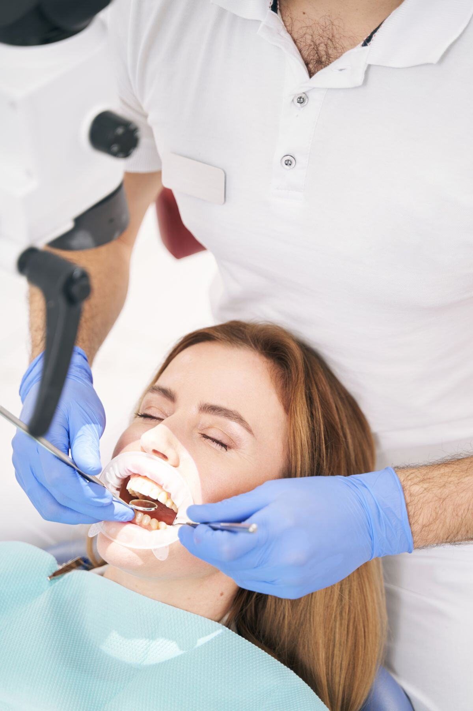

Revisiones y prevención
Controlamos la salida de los dientes, la higiene y la dieta, y aplicamos flúor para prevenir las caries antes de que aparezcan.

Dentista para niños
Cuidamos la sonrisa de los más pequeños con paciencia y cariño para que vivan el dentista como algo positivo desde el primer día.
Primera visita infantil gratis
Sonrisas que crecen sanas
La primera relación de un niño con el dentista marca su salud bucodental para toda la vida. Por eso en la Clínica Eugenia de Montijo tratamos a los más pequeños con tiempo, paciencia y un lenguaje que entienden, para que no cojan miedo. Revisamos su desarrollo, prevenimos las caries y detectamos a tiempo problemas de mordida que es mejor corregir cuanto antes. Estamos en pleno Carabanchel, a un paso del metro Eugenia de Montijo (L5), muy cómodo para ir con niños.
Soluciones
Controlamos la salida de los dientes, la higiene y la dieta, y aplicamos flúor para prevenir las caries antes de que aparezcan.
Tratamos las caries infantiles sin dramatizar y aplicamos selladores en las muelas para protegerlas de la placa.
Detectamos a tiempo apiñamientos y mordidas cruzadas. Te explicamos cuándo conviene empezar la ortodoncia infantil.
Sin miedo, con cariño
Adaptamos cada visita a la edad del niño. Le enseñamos a cepillarse jugando, le explicamos qué vamos a hacer antes de hacerlo y celebramos su valentía. Para los más nerviosos contamos con técnicas de manejo de la conducta y, cuando está indicado, opciones de sedación adaptadas a niños.
La primera visita recomendada es alrededor del primer año o cuando salen los primeros dientes. A partir de ahí, una revisión cada seis meses basta para mantener su boca sana y detectar a tiempo cualquier cosa. Si tu hijo necesita ortodoncia, te acompañamos en todo el proceso, desde la fase de crecimiento hasta los brackets o Invisalign en adolescentes.
Para madres y padres
Un niño que vive su primera visita al dentista como algo positivo será un adulto sin miedo a cuidarse la boca. Por eso dedicamos tiempo a que conozcan la consulta, jueguen con el espejo, entiendan qué vamos a hacer y se vayan con una sonrisa. Nada de prisas ni de sustos. Y un consejo de oro: evita transmitirles tus propios miedos con frases como "no te va a doler"; es mejor hablarles del dentista con naturalidad y en positivo.
Estamos en pleno Carabanchel, junto al metro Eugenia de Montijo (L5), muy cómodo para venir con los peques desde cualquier barrio del distrito.
Calendario orientativo
Cada seis meses una revisión basta para mantener su boca sana y detectar cualquier cosa a tiempo. Si algún día tienen una urgencia (un golpe, un diente roto), te atendemos cuanto antes: mira nuestra guía de urgencias dentales.
Preguntas frecuentes
Cerca de ti
Vengas de donde vengas del distrito, estamos a un paso de casa, junto al metro Eugenia de Montijo (L5).
Te valoramos tu caso y te explicamos las opciones, con un presupuesto cerrado y honesto. Te atiende el Dr. José Rada en Carabanchel.
Odontopediatría: guías para familias
Contenido revisado por el Dr. José Rada, odontólogo colegiado nº 11.124 · Última revisión: julio de 2026